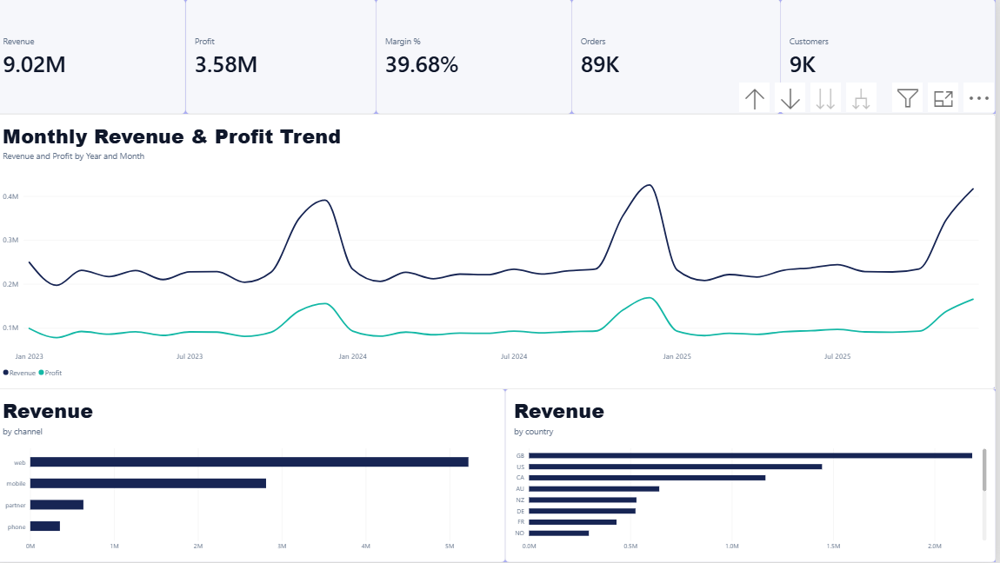
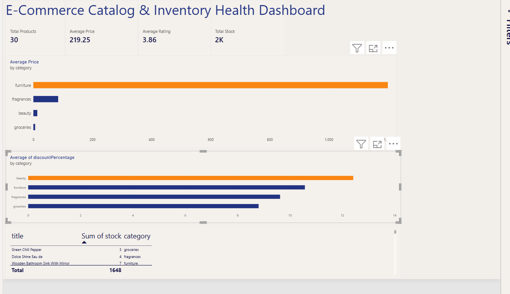
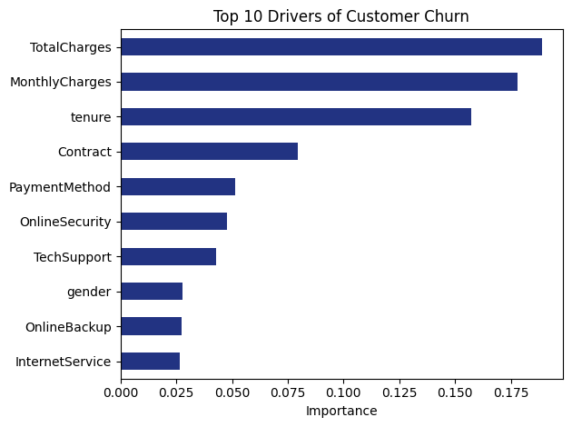

PROJECT 01 · BUSINESS INTELLIGENCE
Retail Intelligence & Customer Profitability Analytics
End-to-end relational retail analysis with data-quality validation, SQL metric modeling, RFM segmentation and Power BI.
Each project starts with a question: what should the data help someone understand, decide or investigate?

End-to-end relational retail analysis with data-quality validation, SQL metric modeling, RFM segmentation and Power BI.

Connected Power BI to live product API data, flattened nested JSON and created DAX KPIs.

Preprocessed 7,000+ customer records, trained a Random Forest classifier and translated feature importance into business implications.
SQLite analysis across Orders, Customers, Products and Employees using joins and aggregation.